Montréal, regard d'architecte
La Grande Rouge
36 x 24 po.
Acrylique sur toile galerie
1 295 $
Cette maison victorienne du Carré Saint-Louis est l'une des plus photographiées de Montréal — une véritable lady in red du Plateau, avec sa tourelle d'angle et ses lucarnes à fronton sculpté. Le rouge éclatant de ses boiseries claque contre la pierre grise, sous un ciel d'été qui vire au turquoise. L'angle de vue, légèrement en contre-plongée, donne à la façade une présence presque monumentale, comme si la maison elle-même posait pour le portrait.
This Victorian house on Carré Saint-Louis is one of the most photographed in Montréal — a true lady in red of the Plateau, with its corner turret and sculpted gable dormers. The bright red of its trim snaps against the grey stone, under a summer sky turning almost turquoise. The slightly low-angle view gives the façade an almost monumental presence, as if the house itself were posing for a portrait.
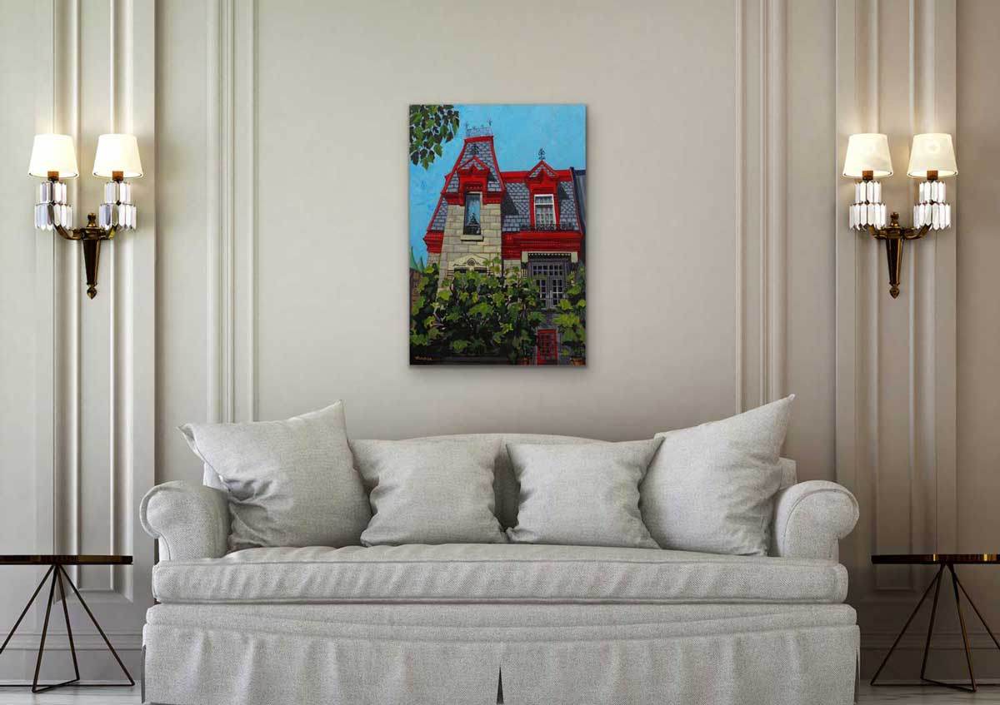
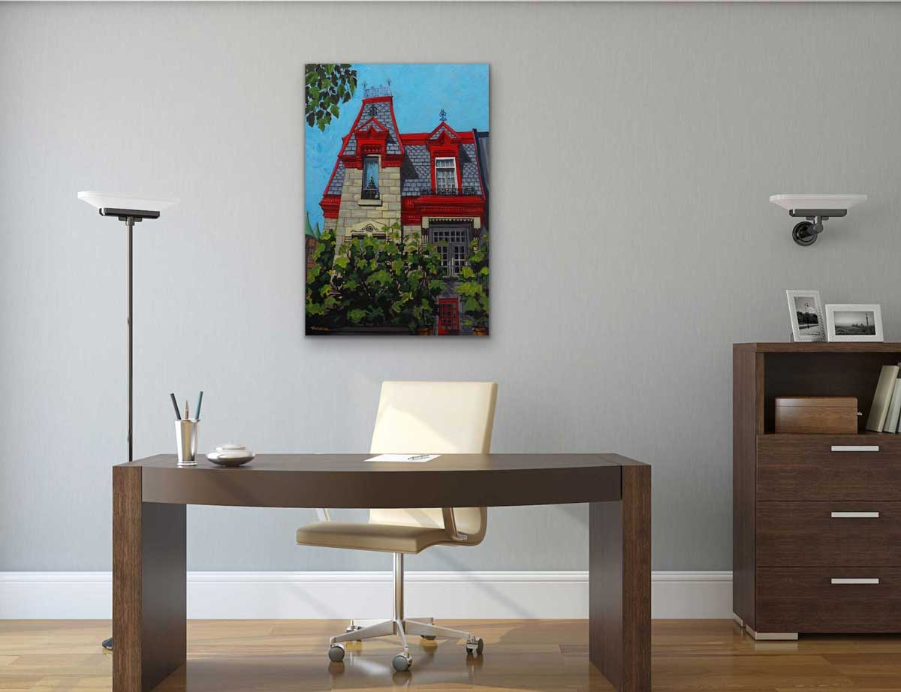
Montréal, regard d'architecte
À l'Étage
36 x 24 po.
Acrylique sur toile galerie
1 295 $
Vue du dessous, à travers les feuilles d'un érable urbain, la tourelle de pierre grise de cette élégante maison historique du Carré Saint-Louis — l'une des plus photographiées de Montréal — se découpe contre un ciel bleu franc. Le regard grimpe naturellement du feuillage vert tendre vers le clocheton, exactement le réflexe d'un œil habitué à lire des plans en élévation. Les détails architecturaux sont traités avec la précision d'un relevé technique, mais baignés d'une lumière qui n'appartient qu'à la peinture.
Seen from below, through the leaves of an urban maple, the grey stone turret of this elegant historic house on Carré Saint-Louis — one of the most photographed in Montréal — stands out against a clear blue sky. The eye naturally climbs from the soft green foliage toward the bell tower, exactly the reflex of an eye trained to read elevation drawings. The architectural details are rendered with the precision of a technical survey, yet bathed in a light that belongs only to painting.
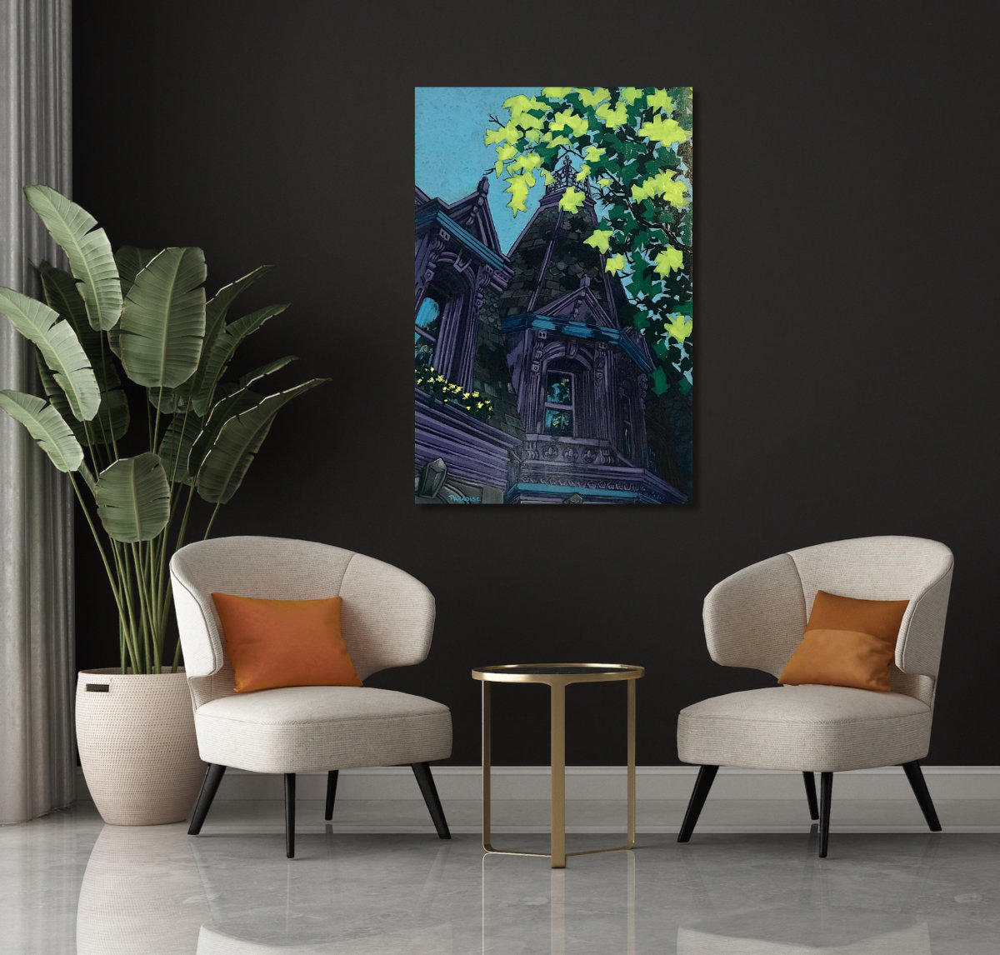

Montréal, regard d'architecte
Regard Perçant
24 x 18 po.
Acrylique sur toile galerie
675 $
Au 3679 avenue Laval, dans le Square Bohème du Plateau tout près du Carré Saint-Louis, cette façade victorienne verte aux boiseries travaillées semble nous observer autant qu'on l'observe. Ses fenêtres deviennent des yeux, son large porche à colonnades une expression figée dans le temps — et un hibou de bois, accroché près de l'entrée, veille lui aussi sur la rue, ajoutant son propre regard perçant à celui de la maison.
At 3679 avenue Laval, in the Plateau's Square Bohème, just steps from Carré Saint-Louis, this green Victorian façade with its ornate woodwork seems to watch us as much as we watch it. Its windows become eyes, its wide colonnaded porch an expression frozen in time — and a wooden owl, perched near the entrance, keeps its own watch over the street, adding its piercing gaze to that of the house.
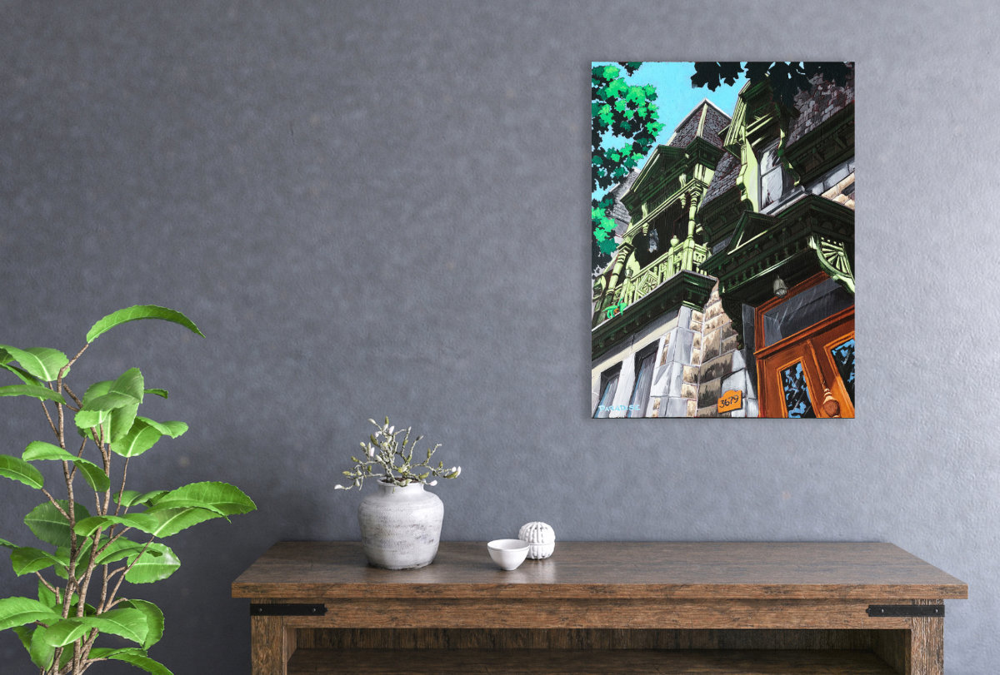
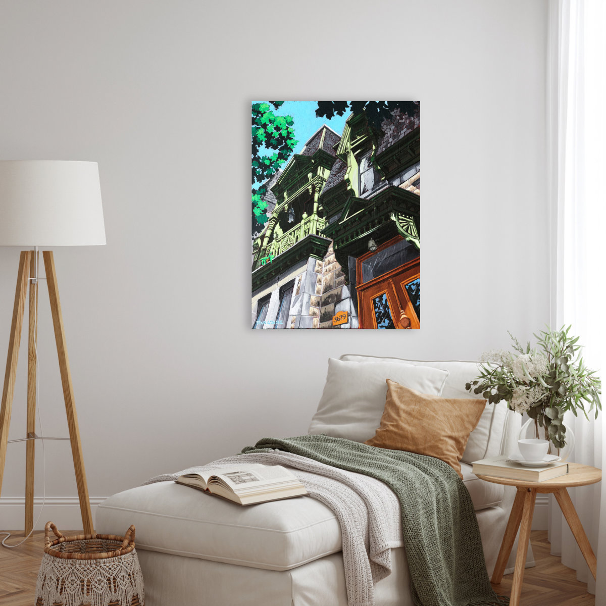
Montréal, regard d'architecte
Coin Orange
24 x 18 po.
Acrylique sur toile galerie
675 $
Un balcon de fer forgé, débordant de fleurs roses et de vignes vertes, se découpe contre un mur orange brûlé qui occupe presque tout le cadre. La composition est volontairement audacieuse — peu de ciel, peu de contexte — pour que cette seule explosion de couleur chaude transforme un simple balcon montréalais en pièce presque abstraite.
A wrought-iron balcony, overflowing with pink flowers and green vines, stands out against a burnt-orange wall that fills nearly the entire frame. The composition is deliberately bold — little sky, little context — so that this single explosion of warm colour transforms an ordinary Montréal balcony into an almost abstract piece.
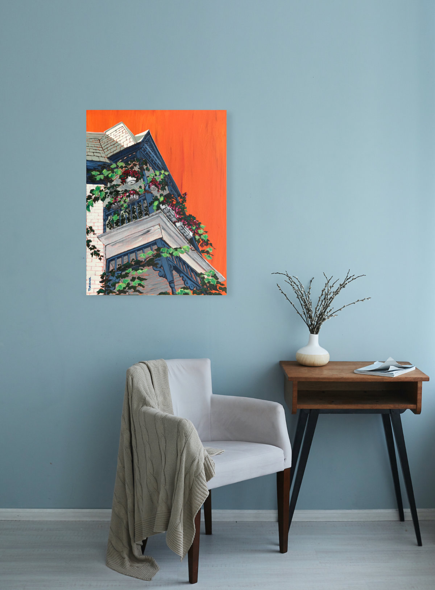
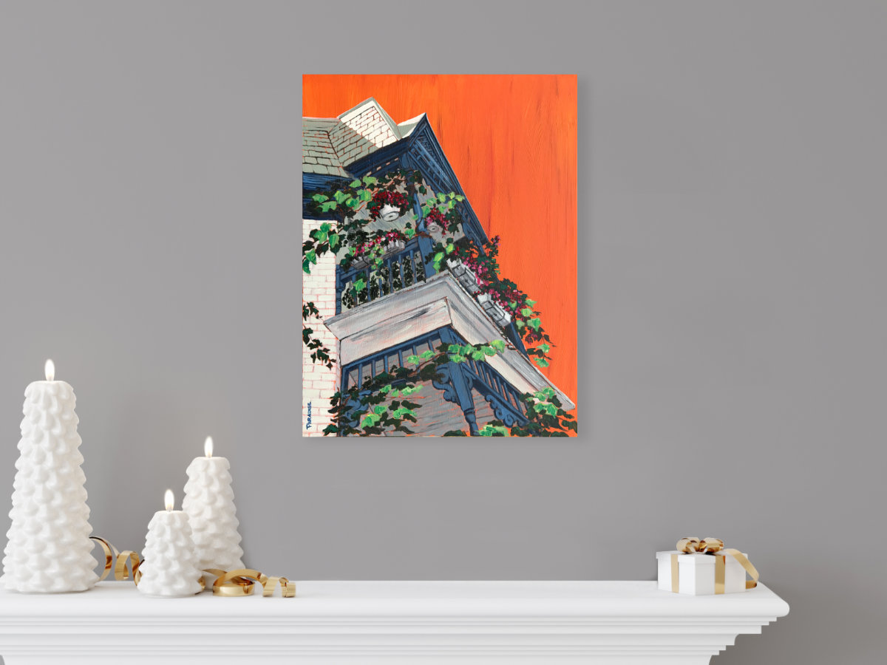
Montréal, regard d'architecte
Sul' Plateau
36 x 24 po.
Acrylique sur toile galerie
1 295 $
Cette demeure du 3839 avenue Laval, typique du Plateau-Mont-Royal, respire le caractère en embrassant pleinement ses imperfections. Un escalier extérieur, ombragé par un érable dont les feuilles vert tendre filtrent la lumière jusqu'au numéro civique peint sur la porte orange. Cette composition existait d'abord en aquarelle — la première œuvre vendue de Benoît, lors de sa première exposition à la Maison Antoine-Lacombe de Joliette en 2016. Cette version à l'acrylique reprend cette même architecture chaleureuse, dans l'espoir de trouver, elle aussi, preneur.
This home on avenue Laval, typical of the Plateau-Mont-Royal, wears its character openly, embracing its imperfections fully. An exterior staircase, shaded by a maple whose tender green leaves filter the light down to the house number painted on the orange door. This composition first existed as a watercolour — Benoît's very first sale, at his first-ever exhibition at the Maison Antoine-Lacombe in Joliette in 2016. This acrylic version revisits that same warm architecture, hoping it too will find a home.
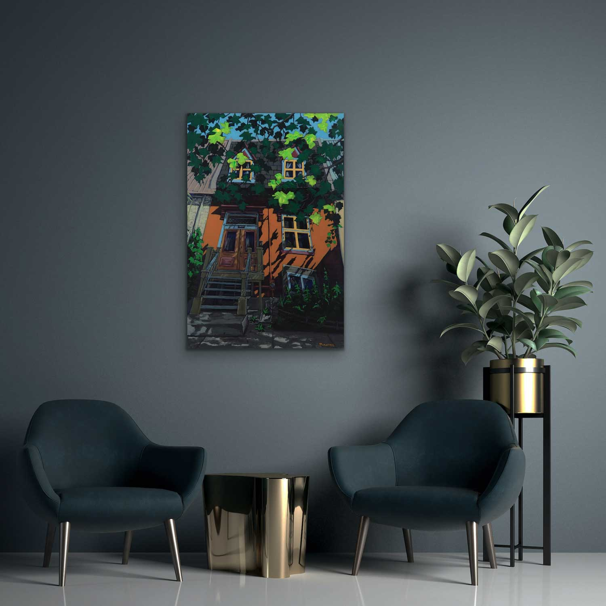
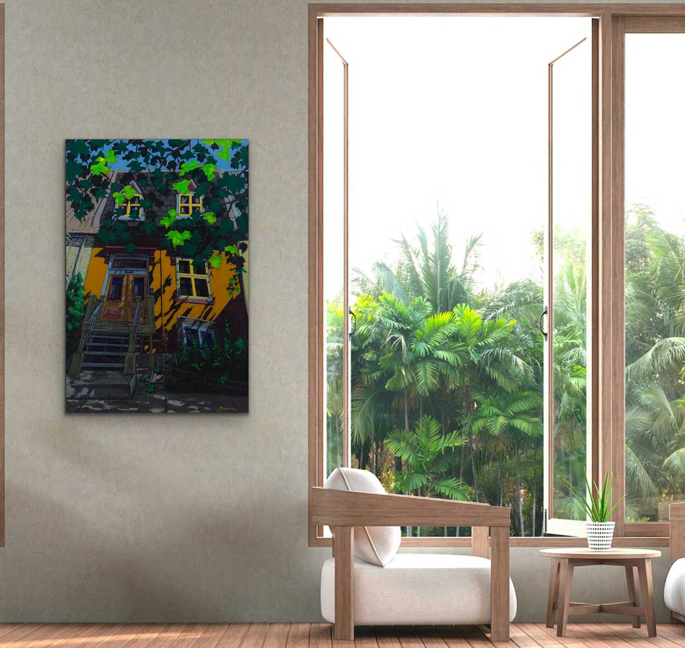
Montréal, regard d'architecte
Fenêtre sur René
18 x 24 po.
Acrylique sur toile galerie
675 $
Une fenêtre patrimoniale aux volets blancs entrouverts flotte dans un ciel rempli de nuages — sans mur, sans façade autour, juste le bleu et le blanc à perte de vue. Cette toile est née d'un jumelage entre peintres et photographes du Club photo de Boisbriand, lors de l'édition 2017 du « Déclic du pinceau », à partir d'une photo de Marc-André Thibodeau intitulée Fenêtre de Normandie. Benoît en a changé le point de vue et amplifié la perspective — une fenêtre extérieure donnant sur l'extérieur, un hommage assumé à René Magritte. Une fenêtre ouverte sur le rêve : sky is no limit.
A heritage window with white shutters left ajar floats in a sky full of clouds — no wall, no façade around it, just blue and white as far as the eye can see. This painting was born from a pairing exercise between painters and photographers from the Boisbriand Photo Club, during the 2017 edition of "Déclic du pinceau," based on a photograph by Marc-André Thibodeau titled Fenêtre de Normandie. Benoît shifted the viewpoint and heightened the perspective — an exterior window looking out onto the exterior, a deliberate nod to René Magritte. A window opened onto a dream: sky is no limit.
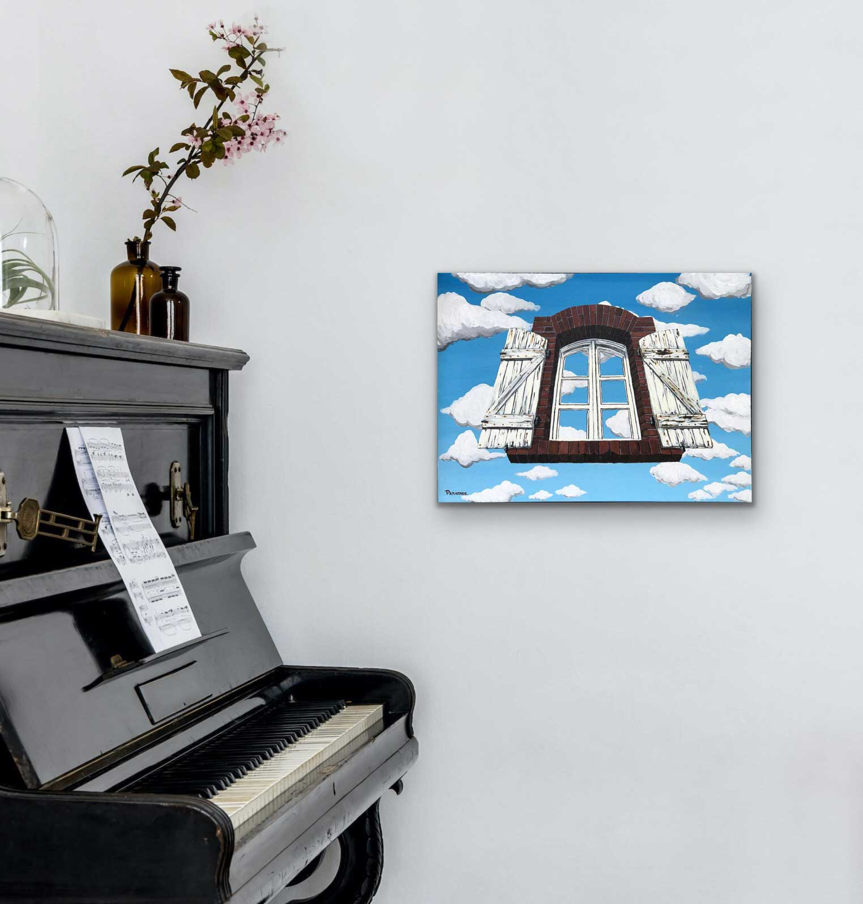
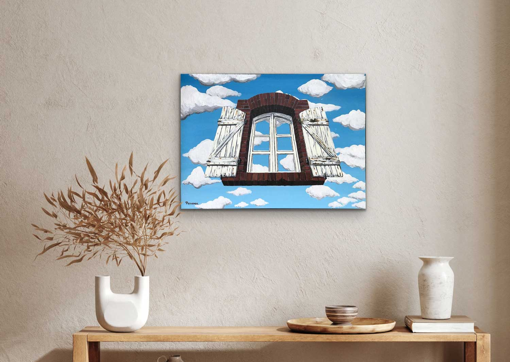
Montréal, regard d'architecte
Premier Juillet QC
40 x 30 po.
Acrylique sur toile galerie
1 725 $
Jour de déménagement à Rosemont–La Petite-Patrie. Des déménageurs grimpent un escalier avec un réfrigérateur, profitant de l'ombre fraîche d'un érable aux feuilles jaune-vert, sous le regard amusé d'une nouvelle voisine. Au bout de la rue bordée de maisons bleu et rouge brique, le campanile de l'église Saint-Ambroise domine la scène — ce moment précis, chaque 1er juillet, où Montréal change de visage, rue par rue.
Moving day in Rosemont–La Petite-Patrie. Movers climb a staircase carrying a refrigerator, grateful for the cool shade of a maple with yellow-green leaves, under the amused gaze of a new neighbour. At the end of a street lined with blue and red-brick houses, the bell tower of Saint-Ambroise church presides over the scene — that precise moment, every July 1st, when Montréal changes face, street by street.
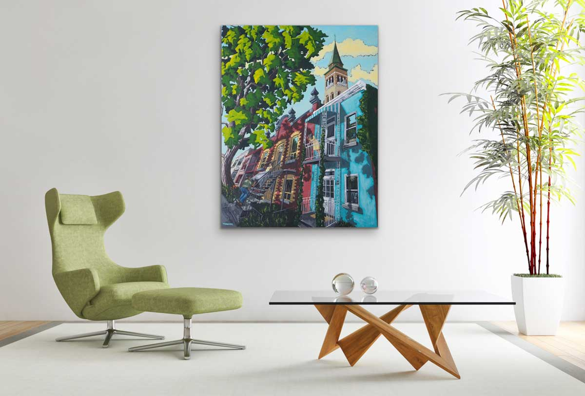
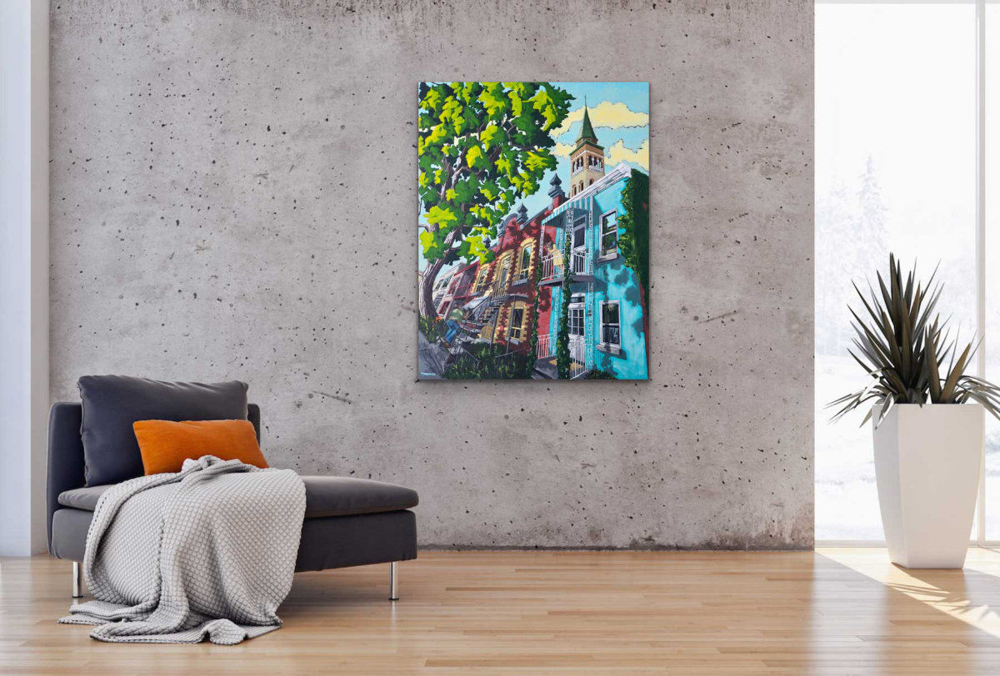
Montréal, regard d'architecte
La Factrice
48 x 36 po.
Acrylique sur toile galerie
2 350 $
Au 6604 rue Chabot, dans Rosemont–La Petite-Patrie, ce duplex affiche fièrement sa borne-fontaine rouge vif en premier plan, contre le jaune pâle de la façade et le vert grimpant de la vigne. Une factrice glisse le courrier dans la fente de la porte — un geste minuscule, presque anecdotique, mais peut-être bientôt un souvenir du passé, à mesure que les boîtes postales communautaires deviennent la norme au pays, nous privant de ce service souvent assorti d'un vrai contact humain.
At 6604 rue Chabot, in Rosemont–La Petite-Patrie, this duplex proudly displays its bright red fire hydrant in the foreground, against the pale yellow façade and the climbing green vine. A letter carrier slips the mail through the door slot — a tiny, almost incidental gesture, but perhaps soon a thing of the past, as community mailboxes become the norm across the country, depriving us of a service often paired with genuine human contact.
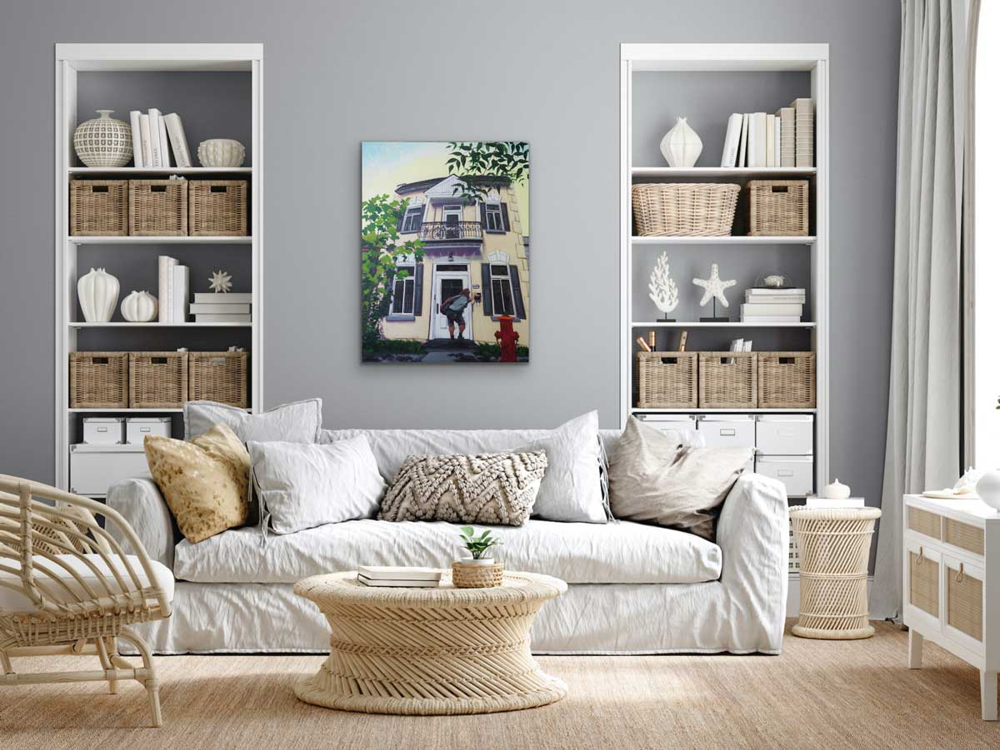
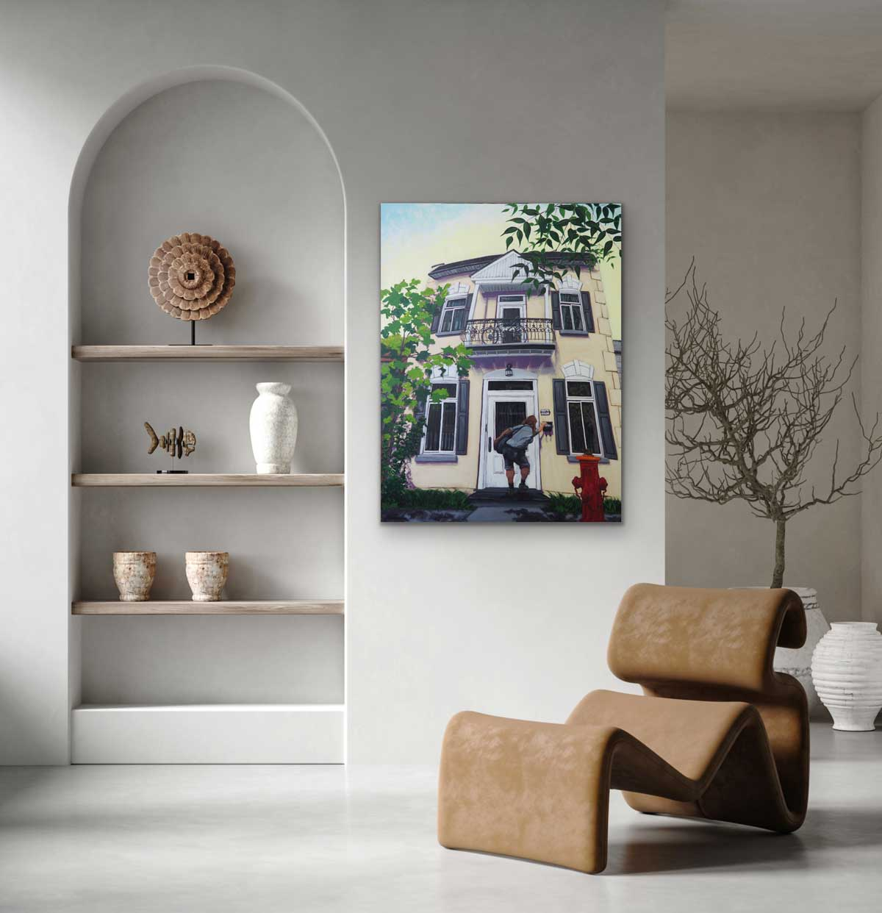
Montréal, regard d'architecte
Parc Molson
24 x 18 po.
Acrylique sur toile galerie
675 $
Le soir, dans le parc Molson de Rosemont–La Petite-Patrie : une invitation à s'asseoir, se détendre et se laisser absorber par le son et l'ambiance de la ville. Les lampadaires déjà allumés percent la pénombre dorée sous une voûte d'érables embrasés de jaune et d'orange — le regard happé vers le haut, dans cette explosion de couleur qui transforme une promenade de quartier en cathédrale végétale.
Evening in Parc Molson, Rosemont–La Petite-Patrie: an invitation to sit down, relax, and let yourself be absorbed by the sound and atmosphere of the city. Streetlamps already lit pierce the golden dusk beneath a canopy of maples ablaze with yellow and orange — the eye drawn upward, into an explosion of colour that turns a neighbourhood stroll into a leafy cathedral.
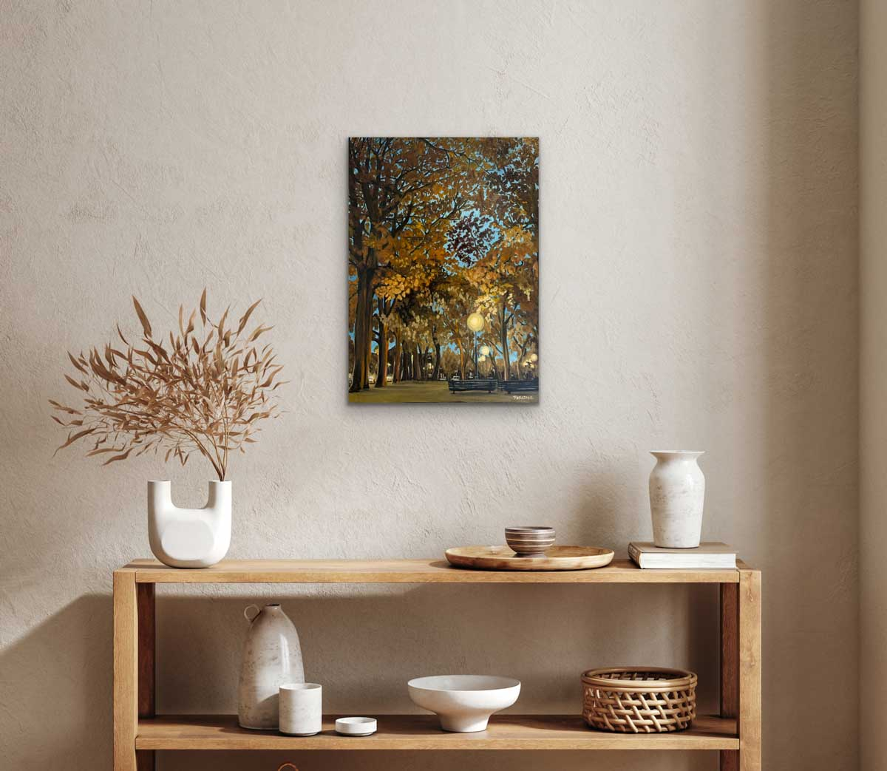
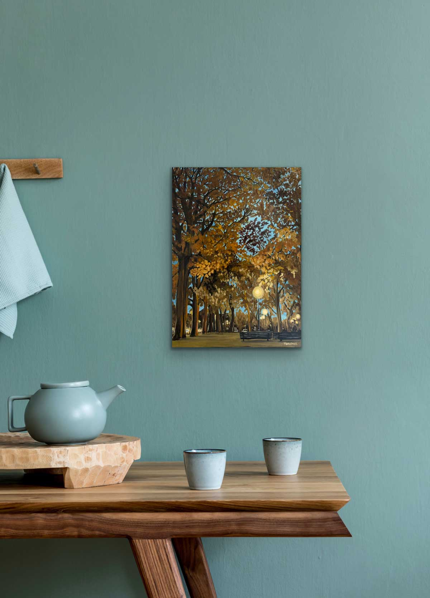
Montréal, regard d'architecte
La Mignonne sur Brébeuf
24 x 18 po.
Acrylique sur toile galerie
675 $
Au 4295 rue de Brébeuf, tout juste au nord du parc Lafontaine, cette maison à la galerie de bois bleu et au toit de tôle pentu se découpe sous un ciel orange embrasé par des feuillages rouge sang. Le contraste entre le bleu froid de la façade et la chaleur ardente du ciel d'automne donne à cette petite résidence un caractère presque théâtral.
At 4295 rue de Brébeuf, just north of Parc Lafontaine, this house with its blue wooden gallery and steep tin roof stands beneath an orange sky set ablaze by blood-red foliage. The contrast between the façade's cool blue and the fiery warmth of the autumn sky gives this small residence an almost theatrical character.
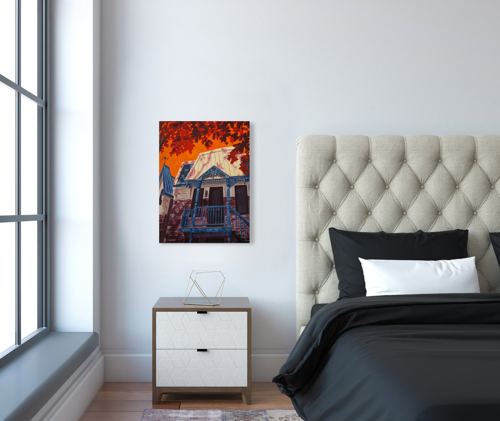
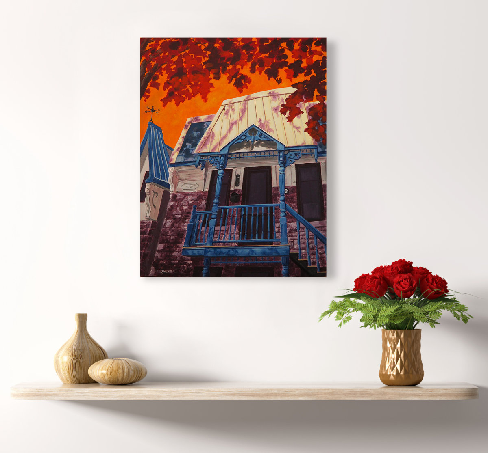
Montréal, regard d'architecte
À l'Ouest du Parc
30 x 40 po.
Acrylique sur toile galerie
1 725 $
Inspirée par les maisons en bordure ouest du parc Lafontaine, cette rangée victorienne du Plateau affiche chacune sa couleur propre — jaune éclatant, bleu, blanc — sous un ciel nocturne enflammé d'orange et de violet. Les bâtiments semblent presque danser dans cette lumière de fin de soirée, comme si l'architecture elle-même se laissait emporter par la chaleur de l'été.
Inspired by the houses lining the western edge of Parc Lafontaine, this row of Victorian Plateau homes each shows off its own colour — bright yellow, blue, white — under a night sky ablaze with orange and violet. The buildings seem almost to dance in this late evening light, as if the architecture itself had been swept up by the warmth of summer.
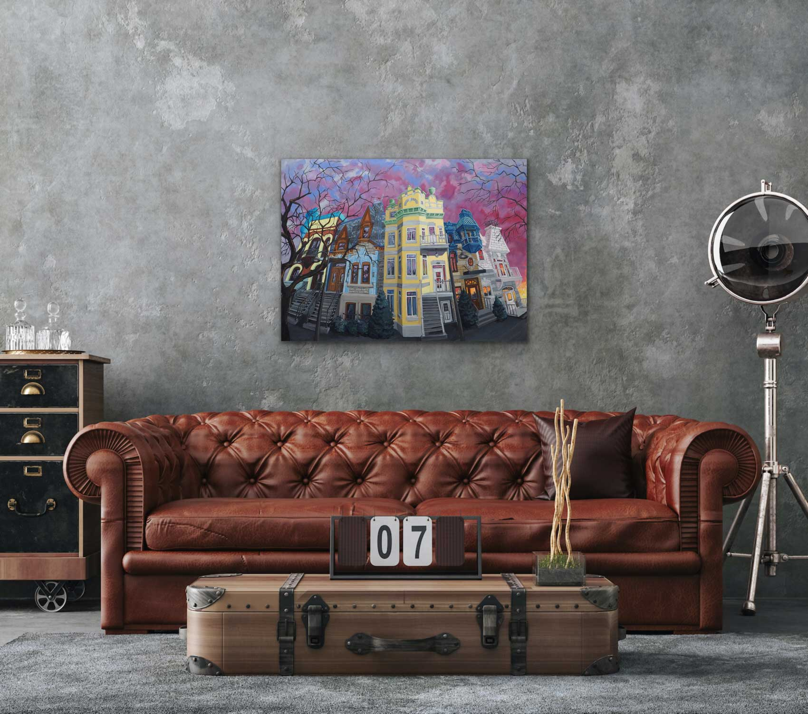
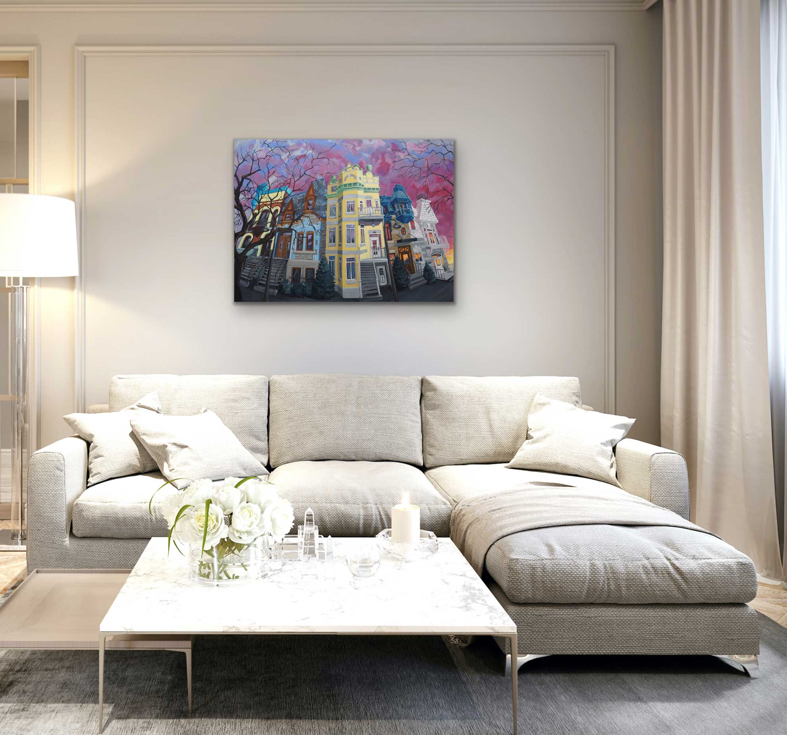
Dialogue maîtres & territoire
Viollet-le-Duc Wave
36 x 48 po.
Acrylique sur toile galerie
2 350 $
Une vague atlantique peinte d'instinct vient percuter un motif ornemental directement inspiré des relevés architecturaux d'Eugène Viollet-le-Duc — rouge profond, bleu ardoise et or se répétant en un réseau géométrique presque hypnotique. Deux univers qui n'auraient jamais dû se rencontrer, la rigueur du dessin patrimonial et la fureur indisciplinée de l'écume blanche, entrent ici en collision. Ce n'est pas une copie des maîtres : c'est un dialogue, où la structure contient le mouvement sans jamais l'étouffer.
An instinctively painted Atlantic wave crashes into an ornamental motif drawn directly from Eugène Viollet-le-Duc's architectural surveys — deep red, slate blue, and gold repeating in an almost hypnotic geometric network. Two worlds that should never have met — the rigour of heritage drawing and the untamed fury of white foam — collide here. This is not a copy of the masters: it is a dialogue, where structure contains movement without ever smothering it.
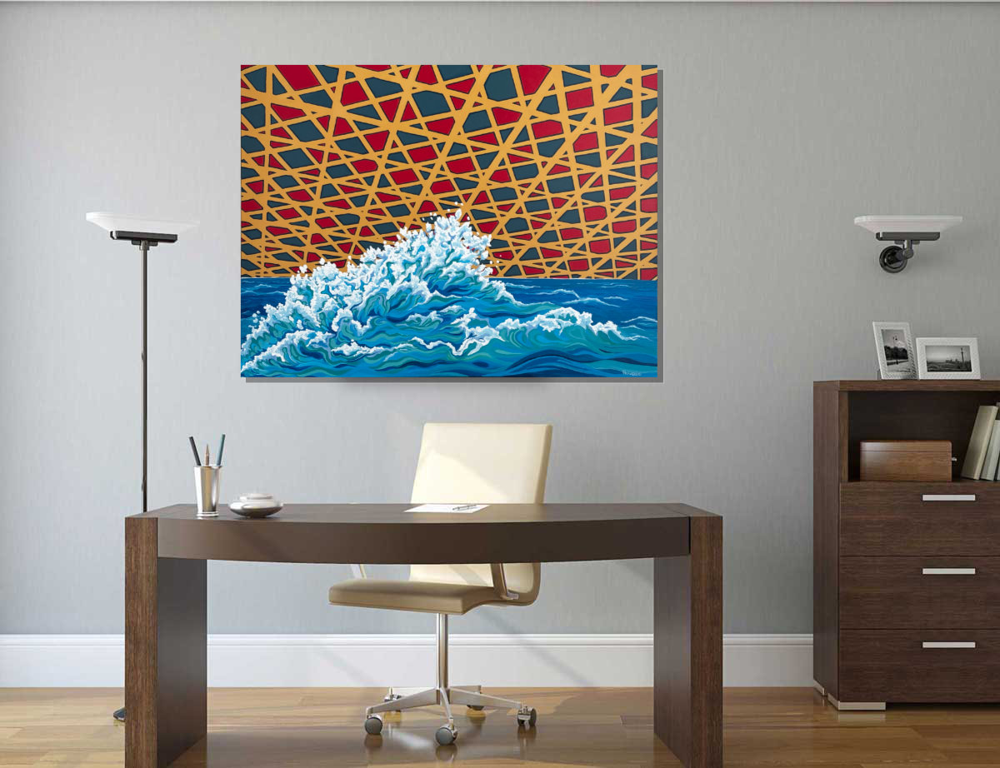
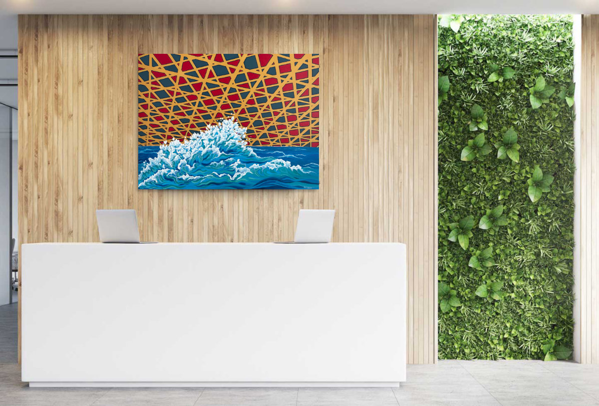
Dialogue maîtres & territoire
Bonsecours
36 x 36 po.
Acrylique sur toile galerie
1 825 $
La chapelle Notre-Dame-de-Bon-Secours, la plus ancienne chapelle en pierre de Montréal, fut commandée par Marguerite Bourgeoys — première éducatrice de Ville-Marie et fondatrice de la Congrégation de Notre-Dame — en 1655. Cette toile capture tout l'attrait du Vieux-Montréal : les pavés colorés des rues Bonsecours et Saint-Paul, le clocher qui veille sous un ciel d'été traversé d'hirondelles, et le restaurant Les Filles du Roy au premier plan, ancré dans la vraie vie de ce quartier historique.
The Notre-Dame-de-Bon-Secours chapel, the oldest stone chapel in Montréal, was commissioned by Marguerite Bourgeoys — Ville-Marie's first educator and founder of the Congrégation de Notre-Dame — in 1655. This painting captures the full charm of Old Montréal: the colourful cobblestones of rue Bonsecours and rue Saint-Paul, the bell tower watching over a summer sky crossed by swallows, and the restaurant Les Filles du Roy in the foreground, grounded in the real life of this historic quarter.
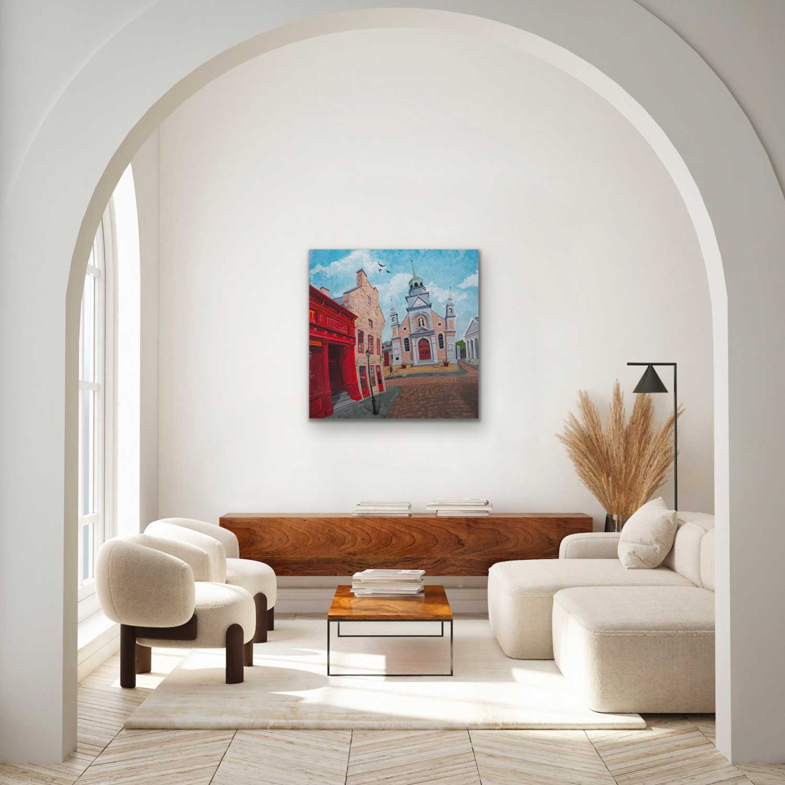
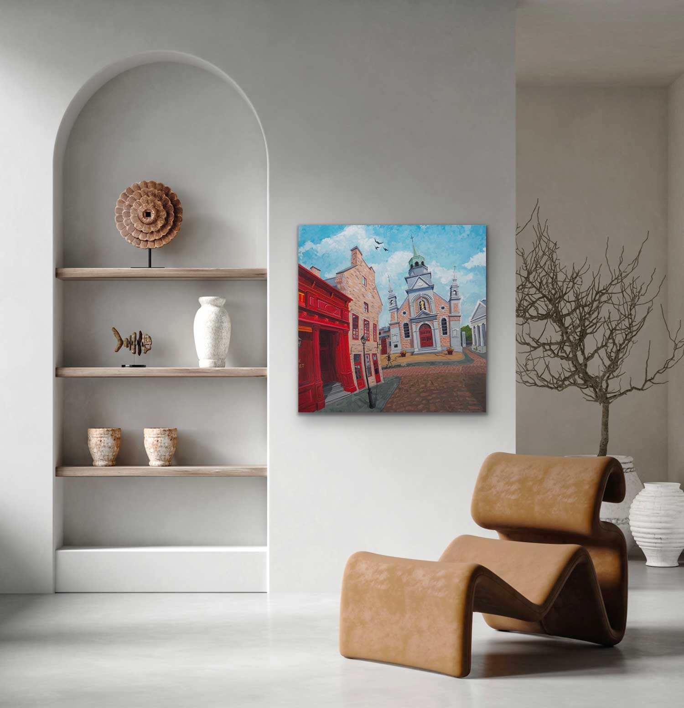
Dialogue maîtres & territoire
Quai de l'Horloge, Montréal
30 x 48 po.
Acrylique sur toile galerie
1 975 $
Le centre-ville de Montréal, vu depuis l'île Sainte-Hélène, s'embrase d'un coucher de soleil orange qui occupe tout le ciel. La composition a été modifiée en souvenir de la mère de Benoît : à gauche, l'édifice Aldred se reflète dans la tour de la Banque Nationale — deux édifices où elle a travaillé. La tour de l'Horloge domine la silhouette, exactement là où les premiers arrivants de la ville auraient découvert ce skyline pour la première fois.
Downtown Montréal, seen from Île Sainte-Hélène, blazes under an orange sunset that fills the entire sky. The composition was altered in memory of Benoît's mother: on the left, the Aldred Building reflects in the National Bank tower — two buildings where she once worked. The Clock Tower dominates the skyline, exactly where the city's first arrivals would have caught their first glimpse of it.
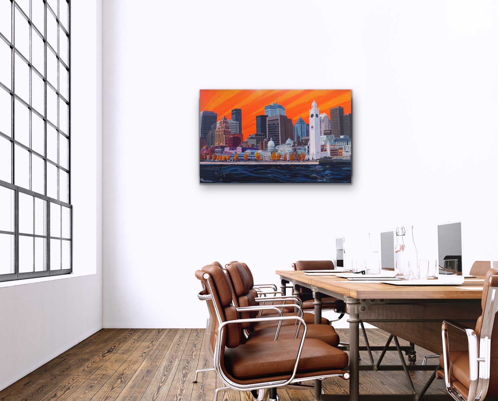
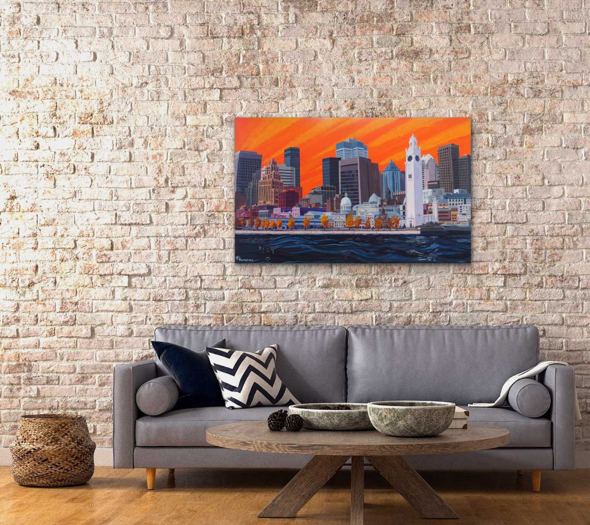
Dialogue maîtres & territoire
La Dame de Maisonneuve
24 x 36 po.
Acrylique sur toile galerie
1 295 $
La basilique Notre-Dame veille sur la Place d'Armes, ses tours néo-gothiques dorées par la lumière de fin de journée. Au premier plan, la statue de Paul de Chomedey de Maisonneuve — œuvre du sculpteur Louis-Philippe Hébert, installée en 1895 — brandit son étendard. Un symbole de l'histoire fondatrice et grandiose de Montréal, traité avec la précision technique d'un relevé architectural.
Notre-Dame Basilica watches over Place d'Armes, its neo-Gothic towers gilded by the late-day light. In the foreground, the statue of Paul de Chomedey de Maisonneuve — sculpted by Louis-Philippe Hébert, installed in 1895 — raises his banner. A symbol of Montréal's grand founding history, rendered with the technical precision of an architectural survey.
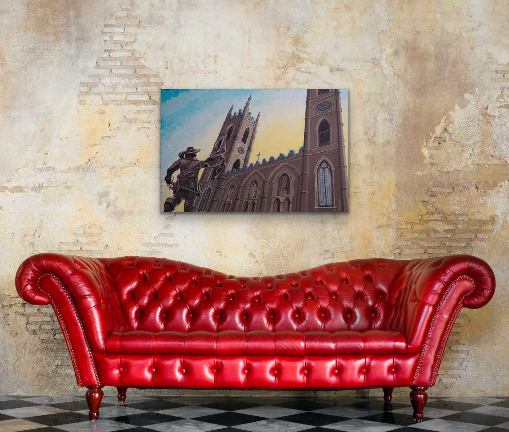
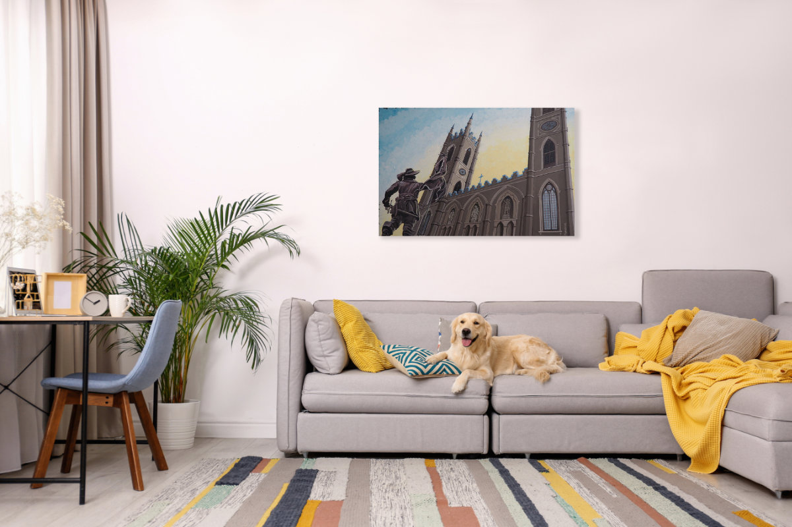
Dialogue maîtres & territoire
Via Champlain
24 x 48 po.
Acrylique sur toile galerie
1 675 $
Le skyline de Montréal, vu depuis le pont Champlain, se découpe avec minutie sous un coucher de soleil saisissant. Au-dessus, de larges bandes de bleu profond ondulent comme des courants — un geste presque abstrait au-dessus d'une ville rendue avec rigueur. Une œuvre distinctive, pensée pour créer un impact puissant dans un bureau ou un salon.
Montréal's skyline, seen from the Champlain Bridge, is rendered with great care beneath a striking sunset. Above it, broad bands of deep blue ripple like currents — an almost abstract gesture above a city painted with rigour. A distinctive piece, designed to make a powerful impact in an office or living room.
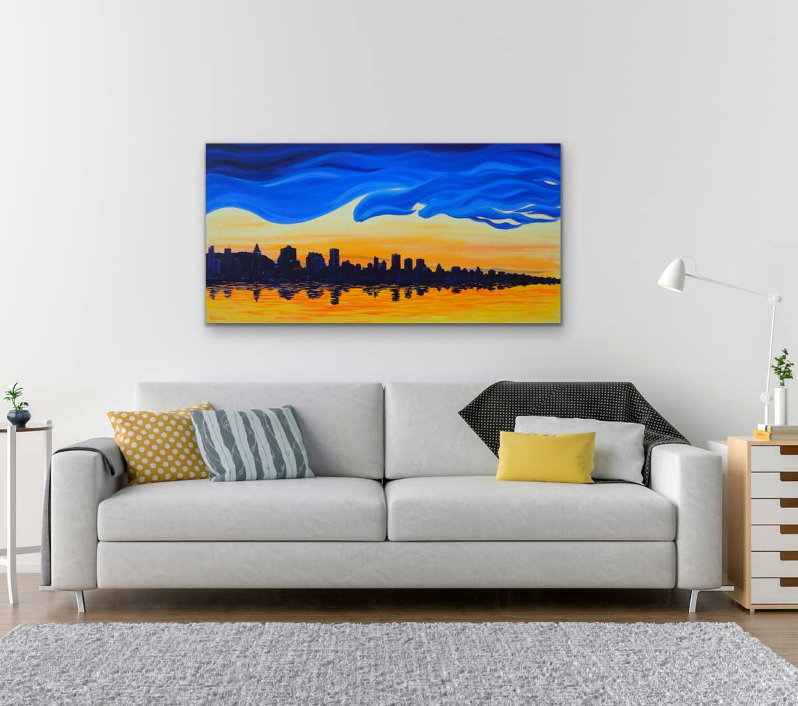
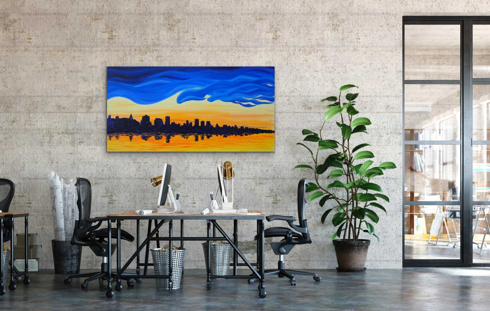
Nature & forêt
Pratto
36 x 48 po.
Acrylique sur toile galerie
2 350 $
Pratto, l'ancien nom du Rocher Percé en Gaspésie, à l'époque où la formation rocheuse de 475 mètres comptait deux arches. Le nom vient de Cap Pratto — le cap du pré, en espagnol — donné par les pêcheurs basques qui fréquentaient ces eaux bien avant l'arrivée de Jacques Cartier. Ce point de vue précis n'est accessible que par bateau : le turquoise profond de l'eau, les ocres et les mauves de la roche composent un réalisme immersif et saisissant.
Pratto, the former name of Percé Rock in the Gaspé, from a time when the 475-metre rock formation still had two arches. The name comes from Cap Pratto — cape of the meadow, in Spanish — given by the Basque fishermen who worked these waters long before Jacques Cartier's arrival. This precise vantage point is only reachable by boat: the deep turquoise of the water, the ochres and mauves of the rock, compose an immersive and striking realism.
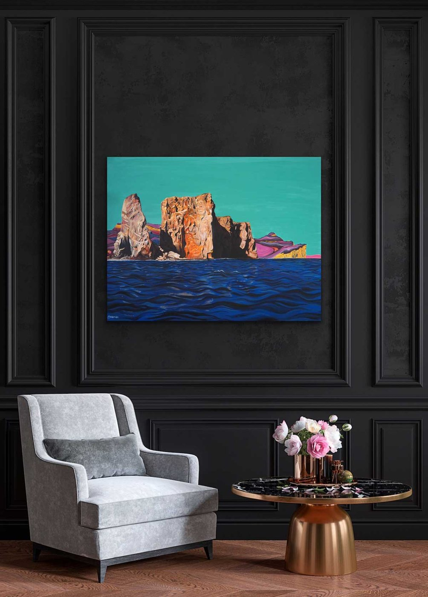
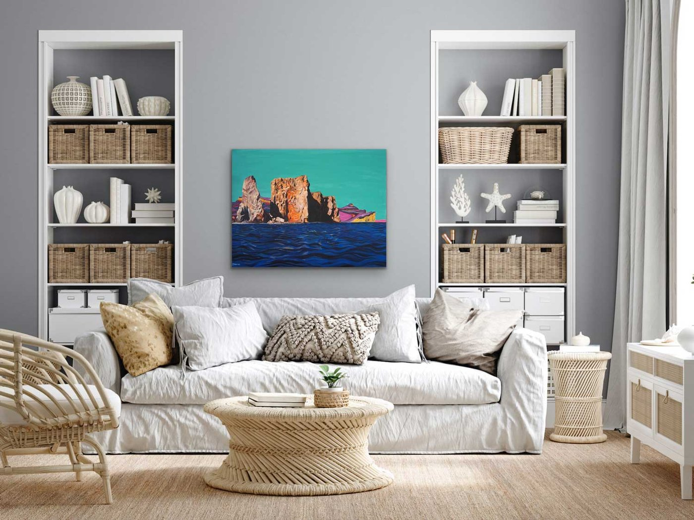
Nature & forêt
En Amour sur la Côte Est
36 x 24 po.
Acrylique sur toile galerie
1 295 $
Un coucher de soleil sur la côte atlantique, ciel zébré de rose et de mauve se reflétant dans une eau d'un calme parfait. Au premier plan, un amas de bouées et de cordages abandonnés forme une silhouette presque sculpturale — la beauté grandiose du paysage et les traces modestes du travail maritime, côte à côte, sans hiérarchie entre elles.
A sunset over the Atlantic coast, sky streaked with pink and mauve reflecting in perfectly calm water. In the foreground, a tangle of abandoned buoys and ropes forms an almost sculptural silhouette — the grandeur of the landscape and the modest traces of maritime work, side by side, without hierarchy between them.
Nature & forêt
Sous le Grand Marronnier
36 x 24 po.
Acrylique sur toile galerie
1 295 $
Un marronnier en pleine floraison, ses grappes de feuilles orangées allumées comme des lanternes contre un ciel bleu profond, abrite une balançoire de bois où un enfant reste absorbé dans sa lecture. Une scène d'enfance suspendue dans le temps, où l'arbre devient gardien plutôt que simple décor.
A chestnut tree in full bloom, its orange leaf clusters glowing like lanterns against a deep blue sky, shelters a wooden swing where a child stays absorbed in a book. A childhood scene suspended in time, where the tree becomes a guardian rather than mere backdrop.
Nature & forêt
Morgan
36 x 24 po.
Acrylique sur toile galerie
1 295 $
L'Arboretum Morgan, réserve forestière de 245 hectares à l'extrémité ouest de l'île de Montréal, à Sainte-Anne-de-Bellevue, fait partie du campus Macdonald de l'Université McGill depuis 1945 — institution locale appréciée pour la sensibilisation à la nature et les loisirs de plein air. Dans cette toile, un grand conifère vert profond se dresse, droit et imposant, devant un petit pavillon à demi caché par le feuillage. La composition verticale serrée lui donne une présence presque architecturale, un pilier vivant aussi structurant qu'une colonne.
The Morgan Arboretum, a 245-hectare forest reserve at the western tip of the island of Montréal, in Sainte-Anne-de-Bellevue, has been part of McGill University's Macdonald Campus since 1945 — a beloved local institution for nature education and outdoor recreation. In this painting, a tall, deep-green conifer stands straight and commanding before a small cottage half-hidden by foliage. The tight vertical composition gives the tree an almost architectural presence, a living pillar as structural as a column.
Nature & forêt
Méditation
36 x 24 po.
Acrylique sur toile galerie
1 295 $
L'inspiration de cette toile est née dans la profusion de teintes vertes des arbres de l'Arboretum Morgan et la beauté du sol forestier, où la dense canopée crée un cadre presque imperméable à la lumière directe du soleil. Les troncs gris filent vers un ciel filtré de vert et d'or, capturant l'ambiance apaisante d'un environnement ombragé — un sentiment de paix et de connexion avec la nature, dans l'esprit même du Shinrin Yoku, l'art japonais du bain de forêt.
The inspiration for this painting came from the profusion of green tones among the trees of the Morgan Arboretum and the beauty of the forest floor, where the dense canopy creates a setting almost impenetrable to direct sunlight. Grey trunks rise toward a sky filtered through green and gold, capturing the soothing atmosphere of a shaded environment — a sense of peace and connection with nature, very much in the spirit of Shinrin Yoku, the Japanese art of forest bathing.
Nature & forêt
Sapins Jardin Botanique
20 x 24 po.
Acrylique sur toile galerie
745 $
Des sapins du Jardin botanique de Montréal, chargés de neige fraîche, se découpent en silhouettes sombres contre un ciel d'hiver bleuté et violacé. Cette application subtile des couleurs rappelle l'enfance et le temps des fêtes — une scène simple et silencieuse, presque méditative.
Fir trees at the Montréal Botanical Garden, heavy with fresh snow, stand as dark silhouettes against a bluish, violet winter sky. This subtle use of colour evokes childhood and the holiday season — a simple, quiet scene, almost meditative.
Nature & forêt
Lac Paradis
20 x 24 po.
Acrylique sur toile galerie
745 $
C'est toujours une bonne journée quand on peut faire de la raquette en forêt et trouver un lac qui porte son nom. Encadré de conifères verts et d'arbres dénudés aux teintes pourpres, ce lac gelé repose sous un ciel hivernal strié de bandes de lumière froide, ponctué de touches chaudes — le silence de l'hiver québécois, capturé avec un souci du détail presque en 3D.
It's always a good day when a snowshoe walk through the forest leads to a lake that bears your own name. Framed by green conifers and bare trees in shades of purple, this frozen lake rests beneath a winter sky streaked with cool light, punctuated by warm touches — the silence of Québec winter, captured with an almost three-dimensional attention to detail.
Nature & forêt
Catalpa
40 x 60 po.
Acrylique sur toile galerie
2 875 $
Ce catalpa vétéran du Jardin botanique de Montréal affiche fièrement le passage du temps, ses branches tordues déployées comme une signature dans un ciel rosé. Dénudé par l'hiver naissant, il devient ici un personnage à part entière — sculptural, patient, habité d'une présence presque humaine, capable de faire un effet monstre dans n'importe quel salon.
This veteran catalpa tree at the Montréal Botanical Garden proudly bears the marks of time, its twisted branches unfurling like a signature against a rosy sky. Stripped bare by the coming winter, it becomes a character in its own right here — sculptural, patient, carrying an almost human presence, capable of making a striking impact in any living room.
Nature & forêt
Friends for Life
60 x 40 po.
Acrylique sur toile galerie
2 875 $
Ce couple d'arbres enraciné au Jardin botanique de Montréal partage le sol et l'air, racines et branches entrelacées, uni pour la vie. L'un déploie un feuillage vert profond, l'autre un bleu argenté — deux essences différentes, debout ensemble depuis toujours, contre un ciel nocturne strié de bleu sombre.
This pair of trees, rooted together at the Montréal Botanical Garden, shares soil and air, their roots and branches intertwined, united for life. One unfurls deep green foliage, the other a silvery blue — two different species, standing together as if they always had, against a night sky streaked with dark blue.
Nature & forêt
Takwakin
36 x 24 po.
Acrylique sur toile galerie
1 295 $
« Takwakin » signifie l'automne en langue innue. Le soleil chaud et bas à l'horizon éclaire le tapis de feuilles de la forêt, où le jaune ocre et l'orange brûlé teintent tout le mois d'octobre. Un éclat de lumière blanche perce entre les troncs sombres comme une étoile tombée au sol — le titre ancre cette toile dans le territoire et dans une mémoire qui précède l'arrivée des colons, la forêt nommée comme elle l'a toujours été.
"Takwakin" means autumn in the Innu language. The warm, low sun on the horizon lights up the forest floor's carpet of leaves, where ochre yellow and burnt orange colour the entire month of October. A burst of white light breaks through the dark trunks like a fallen star — the title roots this painting in the land and in a memory that predates the arrival of settlers, the forest named as it has always been.
Nature & forêt
La Grange
18 x 24 po.
Acrylique sur toile galerie
675 $
Une grange isolée dans un champ doré, sous un arbre généreux et un soleil placé bien en évidence dans le ciel — exactement comme tout le monde le dessinait à la maternelle, avant d'apprendre qu'il était « inapproprié » de le faire, comme un acteur qui regarde la caméra. Benoît aime contourner cette règle. Peut-être qu'il a encore cinq ans.
A solitary barn stands in a golden field, beneath a generous tree and a sun placed in plain view in the sky — exactly as everyone drew it in kindergarten, before learning it was "inappropriate" to do so, like an actor looking straight into the camera. Benoît likes to bend that rule. Maybe he's still five years old.
Nature & forêt
Winter
12 x 10 po.
Acrylique sur toile galerie
240 $
L'hiver à Montréal, lors d'une chute de neige dans La Petite-Patrie. Un petit arbre à feuilles caduques, recouvert de neige collante, attend que le soleil le fasse scintiller, devant un mur de brique rouge orné d'une corniche ouvragée — la maison typique du quartier semble rougir sous l'attention du peintre. Petit format, grand impact : la rencontre entre la nature et l'architecture urbaine montréalaise en plein hiver.
Winter in Montréal, during a snowfall in La Petite-Patrie. A small deciduous tree, covered in clinging snow, waits for the sun to make it sparkle, set against a red brick wall trimmed with an ornate cornice — the neighbourhood's typical house seems to blush under the painter's attention. Small format, big impact: nature meeting Montréal's urban architecture in the depths of winter.
Nature & forêt
Contre-jour
18 x 24 po.
Acrylique sur toile galerie
675 $
Cette scène champêtre capture toutes les teintes possibles du contre-jour, presque monochrome, par une chaude fin d'après-midi de fin d'hiver. On devine presque l'odeur humide de la fonte des neiges et la chaleur du soleil sur la peau, tandis que des branches dénudées se découpent en dentelle noire contre un soleil bas et aveuglant. Le bois ajoute une note terreuse à cette expérience véritablement immersive.
This countryside scene captures every possible shade of backlight, almost monochrome, on a warm late-winter afternoon. You can almost smell the damp scent of melting snow and feel the warmth of the sun on your skin, as bare branches cut a black lace silhouette against a low, blinding sun. The wood adds an earthy note to this truly immersive experience.